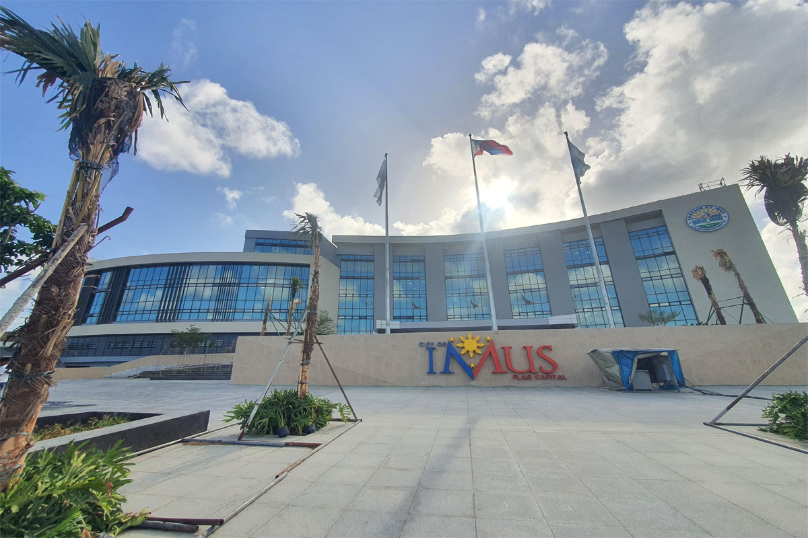
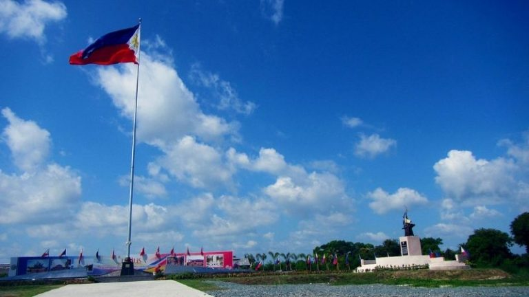

About
Imus, officially known as the City of Imus (Tagalog: Lungsod ng Imus), is a 3rd class component
city
and de
jure capital of the province of Cavite, Philippines. According to the 2020 census, it has a
population of
496,794 people.
It is the de jure capital of the province of Cavite, located 20 kilometres (12 mi) south of
Metro
Manila,
when President Ferdinand Marcos decreed the transfer of the seat of the provincial government
from
Trece
Martires on June 11, 1977. However, most offices of the provincial government are still located
in
Trece
Martires. Imus was officially converted into a city following a referendum on June 30, 2012.
Imus was the site of two major Katipunero victories during the Philippine Revolution against Spain. The Battle of Imus was fought on September 3, 1896, and the Battle of Alapan, on May 28, 1898, the day when the first Philippine flag was flown making Imus the "Flag Capital of the Philippines". Both events are celebrated annually in the city. The Imus Historical Museum honors the city's history with historical reenactment of scenes from the revolution.
|  |
There are at least four versions on the origin of the name of the city. Firstly, Imus is a
Tagalog word meaning "a piece of land cutting into the junction of two rivers." The old location of the
church is in Toclong where the confluence of the Imus and Julian rivers is located, forming a slice of
land.
A second version is a rationalization of a geographical fact. Some intellectuals of the city theorized
that the name "Imus" originated from the Latin word infimus, meaning lowland.[6] Comparing the altitude
of different towns in Cavite province, Imus is described as lowland, slowly elevating to the neighboring
city of Dasmariñas, to Silang, Indang, Amadeo, Mendez, Alfonso, General Emilio Aguinaldo, peaking in
Tagaytay Ridge, the highest part of the province, as upland towns.
Imus was the site of two major Katipunero victories during the Philippine Revolution against Spain. The Battle of Imus was fought on September 3, 1896, and the Battle of Alapan, on May 28, 1898, the day when the first Philippine flag was flown making Imus the "Flag Capital of the Philippines". Both events are celebrated annually in the city. The Imus Historical Museum honors the city's history with historical reenactment of scenes from the revolution.
HISTORY
Like Cavite City (originally called Cavite La Punta) and Noveleta (La Tierra Alta), Imus used to
be a part of Cavite el Viejo (now Kawit), whose parish church was built by the Jesuits during the
administration of Archdiocese of Manila Archbishop Miguel Garcia Serrano, 1618–1629. For more than a
century and a half the people of Imus had to endure walking or traveling 4.5 kilometers (2.8 mi) of dirt
road to attend religious services or transact official business in the city proper. The difficulty of
communication between Imus and Cavite el Viejo was a long-standing complaint of the Imuseños until
another religious order, the Augustinian Recollects, as a consequence of the British occupation of
Manila in 1762, established a parish church in Imus, in what is now known as Bayang Luma.
However, the church site was far from the estate house of the 11,100 hectares (27,000 acres) hacienda
acquired in 1686 by the Recollect Corporation, and when the church was destroyed by the strong typhoon
of September 1779, the Recollect Friars transferred it to barrio Toclong, and finally to sitio de
Balangon, now the city plaza of Imus.
 |
 |
With the establishment of the Recollect parish the people of Imus gained their religious emancipation
from the Jesuit-run parish of Cavite el Viejo. The Recollects, however, would not be content with little
victory or achievement. In 1774, Recollect Fr. Pedro San Buenaventura petitioned the government to
"separate the inquilinos (tenants) of Imus from the political jurisdiction of the government of "Cavite
el Viejo". After a considerable time of waiting, the petition was granted and Imus became an independent
municipality on October 3, 1795.
On May 28, 1898, Imus gained its independence from Spanish colonial rule after the last remaining
stronghold of forces from the Spanish empire had been defeated in the Battle of Alapan as headed by
General Emilio Aguinaldo. This battle led to the Philippine Declaration of Independence in Kawit, Cavite
June 12, 1898. The modern flag of the Philippines was first unfurled in victory during this battle as
they march their way to the present day Cavite City, together with the captured forces of Spain.[7][8]
In commemoration of the event, A Battle of Alapan marker was constructed inside the compound of Alapan
Elementary School May 28, 1998, and was inaugurated by President Fidel V. Ramos. Although, May 28, 2014,
a new marker and the Imus National Heritage Park were inaugurated at Barangay Alapan 2-A to make the
initially constructed marker more accessible to the public.
WANT TO LEARN MORE ABOUT IMUS, CAVITE?
PROCEED TO:
PLACES TO VISIT IN IMUS CAVITE
LOCATION OF IMUS, CAVITE
WANT TO HAVE A VACATION IN IMUS CITY??